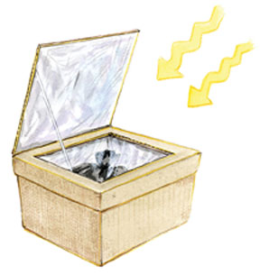
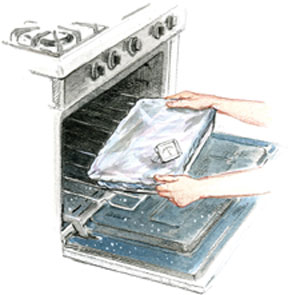
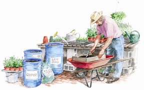

Packaged potting soils are a terrific convenience, but their cost adds up fast in a busy garden. Last year, I paid $7 per 22-quart bag for my favorite, McEnroe Organic, a fair price but is nevertheless dollars out the door. Making only about half of the potting soil I used saved me around $60. Next year, when my pile of rotting sawdust matures, I hope to be potting-soil self-sufficient.
Potting soil self-sufficiency is good for your pocketbook, your plants and the planet, and you actually gain convenience by always having potting soil ready when you need it. If you have soil and compost, you’ve got the basic ingredients for making your own potting soil. In place of peat moss, perlite and vermiculite (the three leading ingredients in bagged potting soil), you can simply combine your best soil with cured compost, leaf mold, rotted sawdust (from untreated wood) or a long list of other organic ingredients. Prepare some small batches, mix it with store-bought stuff to stretch your supply, and gradually make the transition to what potting soil should be - a simple, nurturing medium for growing healthy plants or starting seeds.
At least half of any homemade potting soil is homemade compost, but most commercial potting soils are based on some combination of peat moss, perlite and vermiculite - all of which contribute to land degradation and pollution as they are mined, processed, packaged and shipped.
Peat moss comes from wetland bogs in Canada or Michigan, which is not sustainable and probably a long, long way from where you live (see The Price of Peat Moss). Many nurseries that grow woody shrubs and trees have found that composted tree bark or wood chips work beautifully as a peat moss substitute. In Walla Walla, Wash., Organix Inc. has developed a technology that turns the cow manure used in methane production into a peatlike material, sold as RePeat. Coconut husk fibers, coir, will stand in for peat moss any day of the week, but unless you live where it’s produced - in India or Central America - coir is about as exotic as you can get. For most of us, the best peat alternatives are leaf mold (rotted leaves), rotted sawdust or a mixture of both. A 4-by-5-foot pile of chopped leaves will take about two years to decompose into leaf mold. In areas where organic rice or other grain hulls are available, composting them will create a light material for fluffing up potting soil.
Rotted sawdust, leaf mold or the abundance of organic matter in garden waste compost also can compensate for the absence of vermiculite, a mined mineral with as many environmental issues as peat moss. Deposits in Montana and Virginia have been found to contain asbestos, leaving a small area of South Carolina as the lone remaining safe source in North America. Personally, I don’t want to pay money to help deplete a limited supply of billion-year-old minerals.
Perlite ore, mined from mountain plateaus from New Mexico to Oregon, travels a long way to your garden, too, and its main contributions to potting soil - lightening texture and improving drainage - often can be matched by clean sand. When you want a light mix, a handful of sand per quart will do the trick (you don’t need much). As a hedge against slow drainage in the bottoms of seedling flats or containers, use a thin layer of rotted leaves, sawdust or sand.
Using live compost or biologically active garden soil in your potting mixes often requires two extra steps - screening and then heat-treating or pasteurizing the material at 160 degrees to 180 degrees Fahrenheit. I like to use the compost made from garden waste to make potting soil, so whenever a batch looks good, I screen some and put it in plastic pails, bins or bags (such as those saved from purchased potting soil). My compost screen is a piece of half-inch mesh plastic fencing stapled to two pieces of scrap lumber. Many people use a similar version, with the screen attached to a sturdy wood frame. Stored where it can stay lightly moist, screened compost continues to cure and improves with age.
When you have excellent-quality, cured compost, and you’re not working with light-stressed little seedlings (the most disease-prone of all green beings), it’s fine to go ahead and mix up a 50:50 mixture of compost and good soil, and try it out. Or use more compost and less soil. My garden waste compost often contains quite a bit of soil already, mostly from the roots of pulled plants, so I often go with three parts compost to one part soil when potting plants that are ready for a rich, outdoorsy mix that gives them a nice taste of their future.
Now for the risks. The bioactive nature of compost makes it an ideal primary food source for your garden’s soil food web, but teeming colonies of random fungi and bacteria are the last thing you want in containers. Many of the microbes in compost specialize in breaking down dead plant matter, but if they are deprived of food they often find ways to invade live plant tissues. Good examples are the cadre of fungi that cause seedlings to rot off at the soil’s surface, called “damping off.” These fungi are usually present in compost, but when forced to compete with other microorganisms in open soil, they stick to a dead-plant diet. But when let loose in a flat of tomatoes, with little or no appropriate food or competition, they will go after tender new roots and stems rather than starve.
Numerous studies have shown that pasteurization, which involves heating compost or soil to 160 degrees for an hour, or 180 degrees for 30 minutes, kills a high percentage of all fungi and bacteria (the good and the bad), while preserving the biological integrity of the material - and its ability to suppress other diseases. Pasteurization kills persistent insects such as fungus gnats, too, along with all but a few heat-resistant weed seeds. The temperature must not go above 190 degrees, which can result in the formation of compounds that hinder plant growth.
In summer, a solar cooker made from a cardboard box (See Solar Cooking for Free) will heat a 3-gallon black plastic pot filled with soil and enclosed in a plastic bag within a few hours (search for solar cooker and you’ll find three articles that describe easy-to-build models).
The rest of the year, use your oven and a big heat-retaining Pyrex baking dish (mine came from a thrift store) to pasteurize compost or soil. When done correctly, you will smell an earthy fragrance as the process unfolds. (Reports of foul odors from oven pasteurization are wildly exaggerated.) Here’s the basic method.
Germinating seeds, young seedlings and plants being rooted from stem cuttings benefit greatly from a pasteurized mix, as do long-lived houseplants and trees that are seldom repotted. But you need not heat-treat compost-soil mixtures used for potting up plants that are almost ready to grow outdoors. In fact, I think switching to an unpasteurized, bio-active soil mix during the last “potting up” before transplanting reduces transplant shock. When plants spend a week or two in a potting mix made from the same stuff they will encounter in the garden, there is no break in the growing action as they settle into their permanent home.
Of the 35 recipes for organic potting mixes collected and published by the National Sustainable Agriculture Information Service, many include blood meal (for nitrogen), bone meal (for phosphorus), and small amounts of kelp meal, greensand or various rock-based minerals for minor nutrients. Think before you act, especially if you are substituting nutrient-rich compost for nutrient-poor peat, perlite or vermiculite. Give real potting soil a chance, wait and see, and let experience be your teacher. Should plants grow slowly or show other signs of nutrient stress, it’s easy enough to feed them with a mix-with-water organic fertilizer. Add organic fertilizer in small amounts until your potting soil is giving you the results you want.
Until 30 years ago, most gardeners made their own potting soil by combining their best garden soil with rotted manure from the barn or buckets of leaf mold hauled home from damp stream banks, topped off with a dusting of wood ashes. Contrast and compare: North American gardeners now spend more than $500 million each year on potting mixes and specialty soils. How many of those dollars do you want to come from your wallet?
|
 ELAYNE SEARS You can pasteurize your composted material in a solar cooker made from a cardboard box, aluminum foil and plastic wrap. |
 ELAYNE SEARS Heating your compost for an hour at 160 degrees will kill fungus gnats and most weed seeds. |
 ELAYNE SEARS To make you own potting soil for seedlings and houseplants, first screen some compost, then pasteurize it by heating in an oven or a solar cooker. Then blend this prepared compost with garden soil. |